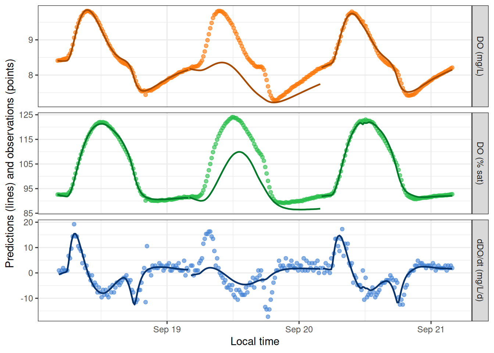

Overview
This vignette demonstrates a few of the options for relating GPP and ER to light and/or temperature.
Setup
Load streamMetabolizer and dplyr.
Get some data to work with: here we’re requesting three days of data at 15-minute resolution. Thanks to Bob Hall for the test data.
dat <- data_metab('3', '15')GPP and ER functions
Here’s a basic model with GPP proportional to light and ER constant over time.
# the Classic: linear GPP, constant ER (also the default)
mm_classic <-
mm_name('mle', GPP_fun='linlight', ER_fun='constant') %>%
specs() %>%
metab(dat)
mm_classicmetab_model of type metab_mle
streamMetabolizer version 0.12.1.9000
Specifications:
model_name m_np_oi_tr_plrckm.nlm
day_start 4
day_end 28
day_tests full_day, even_timesteps, complete_data, pos_discharge, pos_depth
required_timestep NA
init.GPP.daily 8
init.ER.daily -10
init.K600.daily 10
Fitting time: 0.412 secs elapsed
Parameters (3 dates):
date GPP.daily GPP.daily.lower GPP.daily.upper ER.daily ER.daily.lower ER.daily.upper
1 2012-09-18 2.814873 2.158411 3.471335 -2.113937 -2.647969 -1.579906
2 2012-09-19 3.271209 2.561176 3.981243 -2.466198 -3.052360 -1.880037
3 2012-09-20 2.590927 2.119941 3.061914 -1.712055 -2.070765 -1.353344
K600.daily K600.daily.lower K600.daily.upper msgs.fit
1 31.06049 24.47002 37.65096
2 33.23838 26.62471 39.85206
3 28.71846 24.00835 33.42857
Predictions (3 dates):
date GPP GPP.lower GPP.upper ER ER.lower ER.upper msgs.fit msgs.pred
1 2012-09-18 2.814873 2.158411 3.471335 -2.113937 -2.647969 -1.579906
2 2012-09-19 3.271209 2.561176 3.981243 -2.466198 -3.052360 -1.880037
3 2012-09-20 2.590927 2.119941 3.061914 -1.712055 -2.070765 -1.353344 Here’s one where GPP is a saturating function of light. ER is still constant.
# the Saturator: GPP saturating with light, constant ER
mm_saturator <-
mm_name('mle', GPP_fun='satlight', ER_fun='constant') %>%
specs() %>%
metab(dat)
mm_saturatormetab_model of type metab_mle
streamMetabolizer version 0.12.1.9000
Specifications:
model_name m_np_oi_tr_psrckm.nlm
day_start 4
day_end 28
day_tests full_day, even_timesteps, complete_data, pos_discharge, pos_depth
required_timestep NA
init.Pmax 10
init.alpha 1e-04
init.ER.daily -10
init.K600.daily 10
Fitting time: 1.314 secs elapsed
Parameters (3 dates):
date Pmax Pmax.lower Pmax.upper alpha alpha.lower alpha.upper ER.daily
1 2012-09-18 6.033049 5.715948 6.350149 0.0083268781 0.0078854775 0.008768279 -1.9344527
2 2012-09-19 10.636301 -14.149356 35.421959 0.0006899063 0.0001361327 0.001243680 -0.9308165
3 2012-09-20 6.226685 5.745419 6.707950 0.0073752921 0.0068235252 0.007927059 -1.6730454
ER.daily.lower ER.daily.upper K600.daily K600.daily.lower K600.daily.upper msgs.fit
1 -2.025453 -1.8434520 24.570655 23.556080 25.58523
2 -1.247575 -0.6140585 9.018137 6.705663 11.33061 W
3 -1.789892 -1.5561989 24.400665 23.003057 25.79827
Fitting warnings:
1 date: iteration limit exceeded
Predictions (3 dates):
date GPP GPP.lower GPP.upper ER ER.lower ER.upper msgs.fit msgs.pred
1 2012-09-18 2.468770 NA NA -1.9344527 -2.025453 -1.8434520
2 2012-09-19 0.391596 NA NA -0.9308165 -1.247575 -0.6140585 W
3 2012-09-20 2.407793 NA NA -1.6730454 -1.789892 -1.5561989 The Saturator produces fitting warnings, which are condensed to ‘w’ and a summary in the above print-out. They can be inspected in detail by looking directly at the fitted daily parameters:
get_params(mm_saturator) %>% select(date, warnings, errors) date warnings errors
1 2012-09-18
2 2012-09-19 iteration limit exceeded
3 2012-09-20 Similary, you can inspect the warnings and errors that arise during prediction by pulling out the daily metabolism predictions (but there aren’t any, so those columns are empty):
predict_metab(mm_saturator) %>% select(date, warnings, errors) date warnings errors
1 2012-09-18
2 2012-09-19
3 2012-09-20 You can predict and/or plot instantaneous DO values from the fitted daily parameters.
predict_DO(mm_saturator) %>% head date solar.time DO.obs DO.sat depth temp.water light DO.mod
5689 2012-09-18 2012-09-18 04:05:58 8.41 9.083329 0.16 3.60 0 8.410000
5692 2012-09-18 2012-09-18 04:20:58 8.42 9.093063 0.16 3.56 0 8.403197
5695 2012-09-18 2012-09-18 04:35:58 8.42 9.105254 0.16 3.51 0 8.399110
5698 2012-09-18 2012-09-18 04:50:58 8.43 9.112582 0.16 3.48 0 8.397120
5701 2012-09-18 2012-09-18 05:05:58 8.45 9.127267 0.16 3.42 0 8.397068
5704 2012-09-18 2012-09-18 05:20:58 8.46 9.137079 0.16 3.38 0 8.398825
plot_DO_preds(mm_saturator)
Yep, that fitting warning on day 2 was meaningful! We can encourage the model toward a good fit by adjusting the initial values of Pmax and alpha from which the fitting function should explore likelihood space. There are two ways to do this - as date-specific values in data_daily, or as values that apply to every date in specs(). The two methods can even be combined.
mm_saturator2 <-
mm_name('mle', GPP_fun='satlight', ER_fun='constant') %>%
specs() %>%
metab(dat, data_daily=select(get_params(mm_saturator), date, init.Pmax=Pmax, init.alpha=alpha))
get_params(mm_saturator2) date Pmax Pmax.sd alpha alpha.sd ER.daily ER.daily.sd K600.daily
1 2012-09-18 6.033048 0.1614450 0.008326878 0.0002252292 -1.934453 0.04636854 24.57065
2 2012-09-19 7.269962 0.2810137 0.009041367 0.0003329972 -2.239060 0.07722047 26.60996
3 2012-09-20 6.226683 0.2451116 0.007375290 0.0002815439 -1.673045 0.05956598 24.40066
K600.daily.sd
1 0.5166937
2 0.7961691
3 0.7120838
warnings
1
2
3 last global step failed to locate a point lower than estimate. Either estimate is an approximate local minimum of the function or steptol is too small
errors
1
2
3
mm_saturator3 <-
mm_name('mle', GPP_fun='satlight', ER_fun='constant') %>%
specs(init.Pmax=6.2, init.alpha=0.008) %>%
metab(dat)
get_params(mm_saturator3) date Pmax Pmax.sd alpha alpha.sd ER.daily ER.daily.sd K600.daily
1 2012-09-18 6.033048 0.1614592 0.008326878 0.0002252284 -1.934452 0.04637106 24.57065
2 2012-09-19 7.270001 0.2806162 0.009041332 0.0003330177 -2.239060 0.07715525 26.61006
3 2012-09-20 6.226684 0.2451105 0.007375292 0.0002815623 -1.673045 0.05956607 24.40066
K600.daily.sd
1 0.5167332
2 0.7952315
3 0.7120806
warnings
1 last global step failed to locate a point lower than estimate. Either estimate is an approximate local minimum of the function or steptol is too small
2
3
errors
1
2
3
mm_saturator4 <-
mm_name('mle', GPP_fun='satlight', ER_fun='constant') %>%
specs(init.Pmax=6.2, init.alpha=0.008) %>%
metab(dat, transmute(get_params(mm_saturator), date, init.Pmax=Pmax[1], init.alpha=alpha[1])[2,])
get_params(mm_saturator4) date Pmax Pmax.sd alpha alpha.sd ER.daily ER.daily.sd K600.daily
1 2012-09-18 6.033048 0.1614592 0.008326878 0.0002252284 -1.934452 0.04637106 24.57065
2 2012-09-19 7.270001 0.2806151 0.009041378 0.0003330192 -2.239069 0.07715563 26.61007
3 2012-09-20 6.226684 0.2451105 0.007375292 0.0002815623 -1.673045 0.05956607 24.40066
K600.daily.sd
1 0.5167332
2 0.7952308
3 0.7120806
warnings
1 data_daily$init.Pmax==NA so using specs; data_daily$init.alpha==NA so using specs; last global step failed to locate a point lower than estimate. Either estimate is an approximate local minimum of the function or steptol is too small
2
3 data_daily$init.Pmax==NA so using specs; data_daily$init.alpha==NA so using specs
errors
1
2
3 Despite the remaining warnings, DO predictions from the saturating GPP-light function do look better than from the classic model for this particular dataset.
See the full list of available functions for gross primary productivity (GPP) and ecosystem respiration (ER) in ?mm_name.